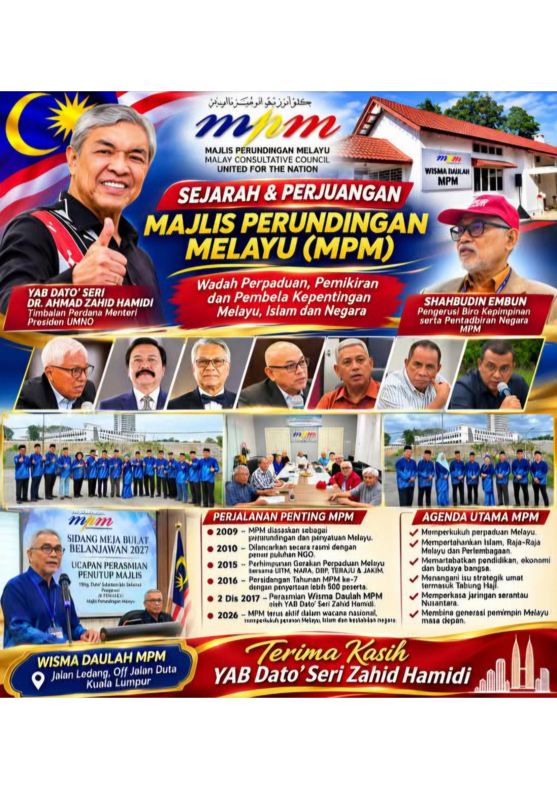

SEJARAH DAN PERJUANGAN MAJLIS PERUNDINGAN MELAYU (MPM)
Hampir Dua Dekad Menyatukan Pemikiran, Memperkasa Bangsa dan Membina Daulah
Menelusuri perjalanan dari peringkat awal penubuhan hingga kepimpinan masa kini
PENDAHULUAN: SEJARAH YANG TIDAK WAJAR DILUPAKAN
Setiap organisasi yang mempunyai cita-cita besar pasti melalui perjalanan yang panjang. Ada ketika perjuangannya mendapat perhatian, ada ketika ia berhadapan cabaran, dan ada masanya pengorbanan mereka yang berada di belakang tabir tidak diketahui umum.
Majlis Perundingan Melayu (MPM) merupakan sebuah wadah yang lahir daripada kesedaran tentang pentingnya penyatuan pemikiran, kekuatan organisasi dan suara kolektif masyarakat Melayu serta Bumiputera.
Sejarah MPM bukan sekadar sejarah sebuah pertubuhan. Ia adalah perjalanan menghimpunkan pemimpin pertubuhan bukan kerajaan (NGO), tokoh akademik, ilmuwan, profesional, agamawan dan aktivis masyarakat dalam satu platform perundingan.
Sebagai seorang yang telah mengikuti perjalanan MPM sejak peringkat awal, saya melihat sendiri bagaimana sebuah gagasan berkembang menjadi sebuah organisasi yang mempunyai struktur kepimpinan, sekretariat, pelbagai biro dan sebuah pusat perjuangan yang dikenali sebagai Wisma Daulah MPM.
Justeru, catatan ini ditulis sebagai penghargaan kepada mereka yang pernah menyumbang tenaga, masa, buah fikiran dan pengorbanan demi memastikan kesinambungan perjuangan MPM.
FASA 1: CETUSAN IDEA DAN KESEDARAN PENYATUAN (2008–2009)
Selepas Pilihan Raya Umum Ke-12 pada tahun 2008, landskap politik negara mengalami perubahan besar. Perubahan tersebut turut mencetuskan perbincangan dalam kalangan pemimpin masyarakat dan NGO Melayu mengenai masa depan penyatuan bangsa, kedudukan Bumiputera serta kepentingan Islam dan institusi Raja-Raja Melayu.
Dalam suasana inilah muncul kesedaran bahawa pertubuhan-pertubuhan Melayu tidak boleh bergerak secara bersendirian jika mahu mempunyai suara yang lebih tersusun dan berkesan.
Pada Ogos 2009, Persidangan Survival Bangsa diadakan di Wisma Sejarah, Kuala Lumpur, sebagai antara usaha awal membangkitkan kesedaran kolektif.
Seterusnya, pada 16 Disember 2009, hasrat membentuk sebuah gabungan NGO Melayu dibincangkan dalam satu mesyuarat di Kelab Sultan Sulaiman, Kampung Baru.
Perbincangan tersebut menjadi antara landasan penting kepada pembentukan sebuah wadah yang akhirnya dikenali sebagai Majlis Perundingan Melayu.
FASA 2: PENUBUHAN DAN PELANCARAN RASMI MPM (2009–2010)
Pada 24 Disember 2009, MPM diasaskan sebagai sebuah gerakan penyatuan.
Pada 14 Januari 2010, satu majlis makan malam di Kelab Golf Perkhidmatan Awam (KGPA), yang dianjurkan oleh Tan Sri Abu Zahar Ujang, menjadi antara usaha penting mendapatkan sokongan terhadap gagasan penubuhan MPM.
Kemuncaknya ialah pada 27 Februari 2010 apabila Majlis Perundingan Melayu dilancarkan secara rasmi di Kelab Sultan Sulaiman, Kampung Baru, Kuala Lumpur.
Sebanyak 76 NGO Melayu menyertai gabungan tersebut dan menandatangani watikah pengisytiharan.
Inilah satu detik penting dalam sejarah MPM. Sebuah platform yang menghimpunkan pelbagai pertubuhan di bawah satu payung telah diwujudkan dengan matlamat memperkukuh penyatuan, memperjuangkan kepentingan masyarakat dan menyumbang kepada agenda pembangunan negara.
FASA 3: MEMPERJUANGKAN AGENDA EKONOMI BUMIPUTERA (2010–2013)
MPM tidak mahu perjuangannya sekadar menjadi perbincangan di meja mesyuarat.
Pada tahun 2010, MPM memberikan perhatian serius kepada Model Baru Ekonomi dan masa depan agenda ekonomi Bumiputera.
Pada 29 Mei 2010, MPM menganjurkan Kongres Ekonomi Bumiputera Kelima (KEB5) di Dewan Merdeka, PWTC, Kuala Lumpur.
Kongres tersebut meluluskan 31 resolusi yang kemudian dikemukakan kepada kerajaan sebagai input kepada penggubalan dasar ekonomi negara.
Antara perkara yang diberi perhatian ialah kesinambungan Dasar Ekonomi Baru dan kepentingan memperkukuh kedudukan ekonomi Bumiputera.
Ini memperlihatkan bahawa MPM berusaha memainkan peranan sebagai badan pemikir dan wadah perundingan yang membawa pandangan masyarakat kepada pihak kerajaan.
FASA 4: WADAH ILMU, WAKAF DAN PEMERKASAAN MASYARAKAT (2012–2014)
Perjuangan MPM bukan hanya berkisar tentang politik dan ekonomi.
Pembangunan pendidikan, pengukuhan institusi wakaf, pembinaan modal insan dan peningkatan taraf hidup masyarakat turut menjadi sebahagian daripada agenda yang diperjuangkan.
MPM berusaha menghimpunkan pandangan golongan akademik, profesional dan tokoh masyarakat bagi membincangkan masa depan bangsa melalui pendekatan yang lebih menyeluruh.
Kekuatan sesebuah bangsa tidak boleh bergantung kepada kuasa politik semata-mata. Ia perlu dibina melalui ilmu, ekonomi, institusi, integriti dan kesatuan pemikiran.
FASA 5: MEMPERKUKUH SUARA KOLEKTIF NGO MELAYU (2014–2017)
Menjelang tahun 2016, MPM semakin dikenali sebagai sebuah platform penyatuan NGO Melayu.
Pada 22 September 2016, Persidangan Tahunan Ketujuh MPM berlangsung dengan penyertaan lebih 500 peserta. Dalam laporan Malaysiaaktif, MPM ketika itu disebut sebagai pemangkin kepada lebih 826 NGO Melayu.
Dalam persidangan tersebut, turut diumumkan usaha ke arah penubuhan Yayasan MPM dan Koperasi MPM.
Perkembangan ini menunjukkan bahawa MPM bukan sahaja mahu menjadi platform perbincangan, malah berusaha membina instrumen dan institusi bagi menyokong agenda pembangunan masyarakat.
FASA 6: 2 DISEMBER 2017 – DETIK BERSEJARAH PERASMIAN WISMA DAULAH MPM
Inilah antara detik yang paling bermakna dalam sejarah perjalanan MPM.
Pada 2 Disember 2017, YAB Dato' Seri Dr. Ahmad Zahid Hamidi, Timbalan Perdana Menteri Malaysia ketika itu, telah menyempurnakan perasmian Wisma Daulah MPM, bersempena Persidangan Tahunan Kelapan MPM.
Peristiwa ini bukan sekadar majlis perasmian sebuah bangunan.
Ia membawa makna yang lebih besar kepada perjuangan organisasi. Selepas melalui pelbagai peringkat usaha dan cabaran, MPM mempunyai sebuah pusat yang boleh menjadi tempat pertemuan, perbincangan, perancangan dan penyelarasan agenda perjuangannya.
Dalam ucapan perasmian tersebut, Dato' Seri Ahmad Zahid Hamidi mengingatkan bahawa MPM perlu menyumbangkan idea untuk membantu kerajaan mencorakkan agenda besar orang Melayu dan negara.
Beliau turut menegaskan bahawa MPM tidak seharusnya hanya menghasilkan pandangan di atas kertas seminar dan konvensyen, sebaliknya perlu turut membantu melaksanakan agenda berkenaan.
Bagi saya, perasmian Wisma Daulah merupakan satu pengiktirafan terhadap usaha MPM membina sebuah pusat perjuangan yang dapat menumpukan perhatian kepada agenda lebih besar.
Wisma Daulah MPM bukan sekadar alamat pejabat. Ia menjadi lambang usaha, kesungguhan, kesatuan dan cita-cita sebuah organisasi.
2 Disember 2017 akan terus dikenang sebagai salah satu tarikh penting dalam sejarah MPM.
FASA 7: MEMPERLUAS PERANAN DAN MENDEPANI CABARAN NEGARA (2018–2022)
Selepas memiliki pusat operasinya, MPM terus berhadapan dengan perubahan politik, ekonomi dan sosial negara.
Pertukaran kerajaan, perubahan kepimpinan nasional dan kemudiannya pandemik COVID-19 merupakan cabaran yang menuntut organisasi masyarakat menyesuaikan pendekatan.
MPM terus membawa perhatian kepada isu ekonomi Bumiputera, pendidikan, pembangunan masyarakat, kedudukan Perlembagaan dan kepentingan penyatuan.
Pada 1 Oktober 2020, YAB Tan Sri Muhyiddin Yassin, Perdana Menteri ketika itu, hadir menyempurnakan majlis penutupan Kongres Ekonomi Bumiputera I 1965–2020 yang berlangsung di Wisma Bina Daulah MPM.
Kehadiran Perdana Menteri tersebut merupakan satu lagi peristiwa penting yang memperlihatkan peranan Wisma MPM sebagai tempat berlangsungnya perbincangan dan program berkaitan agenda nasional.
FASA 8: KESINAMBUNGAN PERJUANGAN DAN PEMBAHARUAN KEPIMPINAN (2023–2025)
MPM perlu terus berkembang seiring perubahan zaman.
Perjuangan hari ini tidak boleh hanya bergantung kepada pendekatan lama. Cabaran ekonomi digital, pendidikan generasi muda, kecerdasan buatan, pembangunan profesional, integriti dan kesejahteraan masyarakat menuntut pemikiran yang lebih strategik.
MPM perlu terus membuka ruang kepada golongan profesional, ilmuwan, agamawan dan generasi muda untuk menyumbangkan kepakaran masing-masing.
Dalam masa yang sama, pengalaman tokoh-tokoh terdahulu perlu dijadikan asas kepada kesinambungan kepimpinan.
Bagi saya, organisasi yang mempunyai sejarah panjang perlu mempunyai keupayaan untuk menghargai jasa generasi terdahulu sambil memberi ruang kepada pemimpin baharu membina masa depan.
FASA 9: MPM PENGGAL KEEMPAT (2025–2029) – MEMPERKUKUH STRUKTUR DAN TADBIR URUS
MPM kini meneruskan perjalanan melalui struktur Jawatankuasa Pemandu Penggal Keempat bagi tempoh 2025–2029.
Berdasarkan direktori rasmi JK Pemandu, kepimpinan utamanya terdiri daripada:
- Dato' Haji Salamon Selamat – Pengerusi.
- Tan Sri Prof. Emeritus Dr. Anwar Ali – Timbalan Pengerusi.
- Tan Sri Prof. Emeritus Dr. Ibrahim Abu Shah – Timbalan Pengerusi.
- Dato' Dr. Hasan Mad – Setiausaha Agung.
- Dato' Hajah Faridah Jabbar – Ketua Sekretariat.
Pelbagai biro diwujudkan untuk memberikan tumpuan kepada bidang kepakaran masing-masing, termasuk Hal Ehwal Islam, Kepimpinan dan Pentadbiran Negara, Kesejahteraan Insan dan Masyarakat, Renaisans dan Penyatuan Bangsa, Tadbir Urus dan Integriti, Perundangan dan Perlembagaan, Pendidikan, Bahasa dan Budaya, Ekonomi dan Keusahawanan, Keselamatan, Kesihatan, Alam Sekitar serta Tanah Simpanan Melayu.
Saya sendiri diberikan amanah sebagai:
PENGERUSI BIRO KEPIMPINAN SERTA PENTADBIRAN NEGARA MPM.
Amanah ini bukan sekadar satu gelaran. Ia merupakan tanggungjawab untuk menyumbang pemikiran, pengalaman dan pandangan dalam membantu memperkukuh kepimpinan serta pentadbiran negara.
Saya percaya MPM perlu terus menjadi wadah yang berwibawa, berprinsip dan berupaya menyumbang idea kepada pembangunan negara.
PENUTUP: SEJARAH INI ADALAH WARISAN GENERASI AKAN DATANG
Apabila kita menoleh kembali perjalanan MPM sejak 2009, kita akan melihat sebuah perjalanan yang dibina melalui cetusan idea, perbincangan, penyatuan NGO, kongres, persidangan, pembentukan institusi dan usaha membina pusat perjuangan sendiri.
Daripada Kelab Sultan Sulaiman kepada Wisma Daulah MPM, daripada 76 NGO yang bergabung kepada sebuah struktur kepimpinan yang mempunyai pelbagai biro, perjalanan ini wajar direkodkan dengan baik.
Saya menulis bukan untuk mengangkat seseorang individu melebihi organisasi. Sebaliknya, saya mahu setiap tokoh, pemimpin, pengasas, ahli dan penyumbang yang pernah terlibat mendapat tempat sewajarnya dalam lipatan sejarah.
Kita mungkin berbeza pandangan dalam sesetengah perkara, tetapi sejarah perjuangan mengajar kita bahawa kekuatan sesebuah organisasi terletak pada kesediaan untuk bermusyawarah, menghormati kepakaran dan bergerak atas kepentingan yang lebih besar.
MPM bukan sekadar sebuah nama. MPM adalah wadah pemikiran, penyatuan dan perjuangan yang perlu terus diperkasakan.
Hampir dua dekad perjalanan ini harus menjadi asas untuk membina masa depan yang lebih kukuh.
Semoga segala usaha dan pengorbanan mereka yang terdahulu menjadi amal jariah dan warisan yang terus dikenang oleh generasi akan datang.
SEJARAH KITA, PERJUANGAN KITA, WARISAN KITA.
Shahbudin Embun
Pengerusi Biro Kepimpinan serta Pentadbiran Negara
Majlis Perundingan Melayu (MPM)
Penggal Ke-4 (2025–2029)
Kembali ke halaman utama-Nanis Communication | IPK MEDIA